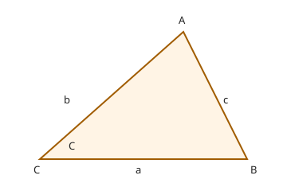
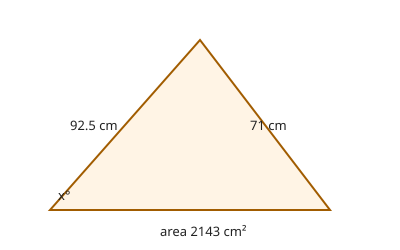

<script src="/assets/redirect.js"></script>
<section class="theory" data-section="IGCSE-15.8">
<h2>15.8 Area of a triangle</h2>
<p class="src">Based on Cambridge IGCSE Mathematics Core &amp; Extended Coursebook, Chapter 15, printed pp.519–522 (the area of a triangle as half ab sin C). Those printed pages sit in coursebook scan parts 050–051, which were not on the local corpus; the teaching follows the official books.json title and the standard coursebook formula, with new wording and new numbers. The calculator is assumed to be in degrees mode.</p>
<p class="key-words"><strong>Key words:</strong> <em>area of a triangle using sine</em></p>
<p>The <strong>area of a triangle using sine</strong> is found from two sides and the included angle. In any triangle, the area is \(\dfrac{1}{2}ab\sin C\), where \(C\) is the angle between sides \(a\) and \(b\).</p>
<figure>

<figcaption>The area is \(\dfrac{1}{2}ab\sin C\), where \(C\) is the included angle.</figcaption>
</figure>
<p>When the included angle is \(30^\circ\) or \(150^\circ\), \(\sin C=\dfrac{1}{2}\), so the area is simply \(\dfrac{1}{4}ab\). When the included angle is \(90^\circ\), \(\sin C=1\) and the formula becomes the familiar \(\dfrac{1}{2}ab\).</p>
<div class="worked-example"><h4>Worked example 1</h4>
<p class="src">Book: area with an included 30-degree angle, printed pp.519–522 style. New numbers.</p>
<p>Two sides of a triangle are 8 cm and 6 cm, and the included angle is \(30^\circ\). Find the area of the triangle.</p>
<ol class="steps">
<li>Area \(=\dfrac{1}{2}\times 8\times 6\times\sin 30^\circ=\dfrac{1}{2}\times 8\times 6\times\dfrac{1}{2}=12\). <span class="mark">A1</span></li>
</ol></div>
<div class="worked-example"><h4>Worked example 2</h4>
<p class="src">Book: area with a right included angle. New numbers.</p>
<p>Two sides of a triangle are 7 cm and 8 cm, and the included angle is \(90^\circ\). Find the area of the triangle.</p>
<ol class="steps">
<li>Area \(=\dfrac{1}{2}\times 7\times 8\times\sin 90^\circ=\dfrac{1}{2}\times 7\times 8=28\). <span class="mark">A1</span></li>
</ol></div>
<h3>Common mistakes</h3><ul>
<li>Using an angle that is not the included angle between the two given sides.</li>
<li>Forgetting the factor \(\dfrac{1}{2}\).</li>
</ul>
<div class="quick-check" data-q="QC1">
<h4>Quick check 1</h4>
<p>Two sides of a triangle are 8 cm and 6 cm, and the included angle is \(30^\circ\). What is the area of the triangle?</p>
<details>
<summary>Show answer</summary>
<ol class="steps">
<li>Area \(=\dfrac{1}{2}\times 8\times 6\times\dfrac{1}{2}=12\). <span class="mark">A1</span></li>
</ol>
<p class="final">\(12\)</p>
</details>
</div>
<div class="quick-check" data-q="QC2">
<h4>Quick check 2</h4>
<p>Two sides of a triangle are 10 cm and 8 cm, and the included angle is \(30^\circ\). What is the area of the triangle?</p>
<details>
<summary>Show answer</summary>
<ol class="steps">
<li>Area \(=\dfrac{1}{2}\times 10\times 8\times\dfrac{1}{2}=20\). <span class="mark">A1</span></li>
</ol>
<p class="final">\(20\)</p>
</details>
</div>
<div class="quick-check" data-q="QC3">
<h4>Quick check 3</h4>
<p>Two sides of a triangle are 7 cm and 8 cm, and the included angle is \(90^\circ\). What is the area of the triangle?</p>
<details>
<summary>Show answer</summary>
<ol class="steps">
<li>Area \(=\dfrac{1}{2}\times 7\times 8=28\). <span class="mark">A1</span></li>
</ol>
<p class="final">\(28\)</p>
</details>
</div>
<h3>Past paper</h3>
<p class="src">0580/22/M/J/23 Question 17, 2 marks. Official QP and MS.</p>
<figure>

<figcaption>The official diagram: sides 92.5 cm and 71 cm enclose the acute angle \(x^\circ\), and the area is 2143 cm\(^2\).</figcaption>
</figure>
<p>The diagram shows a triangle with an acute angle marked \(x^\circ\). The area of the triangle is 2143 cm\(^2\). Work out the value of \(x\). [2]</p>
<details><summary>Show official scheme</summary>
<ol class="steps">
<li>Official MS: 40.7 or 40.73 to 40.74, M1 for \(\dfrac{1}{2}\times 92.5\times 71\sin x=2143\) or equivalent. <span class="mark">M1</span> <span class="mark">A1</span></li>
</ol></details>
</section>
